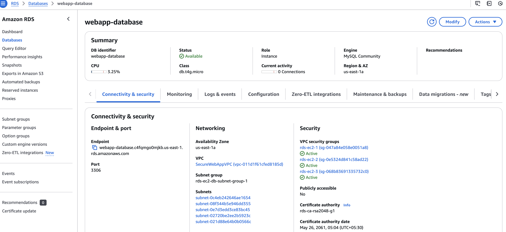

Secure Web App Architecture
Step-by-step guide to setting up a custom VPC with private/public subnets and RDS.
Step-by-Step Guide
1. Create a Custom VPC
- Create VPC → Assign a CIDR block (e.g., 10.0.0.0/16).
2. Set Up Public and Private Subnets
- Inside your VPC, create 2 public and 2 private subnets in different availability zones.
- Assign appropriate IP ranges to each subnet.
3. Configure an Internet Gateway
- Go to Internet Gateways in the VPC menu.
- Click “Create Internet Gateway” → Attach it to your VPC.
- Update public subnet route tables to allow internet access.
4. Set Up a NAT Gateway
- In VPC menu, create a NAT Gateway inside a public subnet.
- Attach an Elastic IP and update private subnet route tables.

5. Create EC2 Instance
- Go to EC2 instance → Click "Launch Instance" in public subnet.
- Attach Elastic IP.
- IAM Role for secure access to AWS services.
- Security Group allowing:
- HTTP (80) from trusted sources (e.g., ALB or specific IPs).
- SSH (22) only from a trusted IP range (not `0.0.0.0/0`).
6. Deploy RDS in Private Subnets
- Go to RDS Service → Click “Create Database”.
- Choose “Amazon Aurora” or “MySQL” and place it in private subnets.
- Ensure Security Group allows database connections from the app server.
-Connected EC2 Instances
-Cloudwatch Monitoring
7. Security Best Practices
- Apply Security Groups to control inbound/outbound traffic.
- Use IAM roles and policies to manage permissions securely.
- Enable CloudWatch logs to monitor network activity.